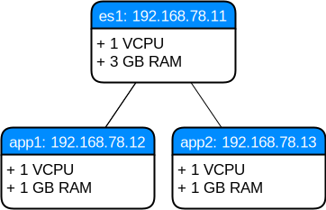

abstract
Some notes:
json_lines codecs is available # non-humandissect is the “smaller version” of grok (delimiter vs regex)| Date | Change description |
|---|---|
| TODO | The first release |
This is the second part of a multi-part series about the Elastic Stack (formerly the ELK stack). This stack consists of 3 parts:
This post will focus on the second part, Logstash, ...
To reproduce the steps in this post, you need to have installed locally:
After these prerequisites are fulfilled:
project source files.env directory1 2 3 4 5 | $ wget http://www.markusz.io/_downloads/elastic-stack-elk-logstash.tar.gz
$ tar -zxvf elastic-stack-elk-elasticsearch.tar.gz
$ cd env
$ vagrant up
$ ansible-playbook playbook.yml
|
Your (truncated) output should look similar to this:
1 2 3 4 5 6 7 8 9 10 11 12 13 14 15 16 17 18 19 20 21 22 23 24 25 26 27 28 29 | [...]
PLAY RECAP ********************************************************************
app1 : ok=10 changed=6 unreachable=0 failed=0
app2 : ok=10 changed=6 unreachable=0 failed=0
es1 : ok=21 changed=17 unreachable=0 failed=0
Thursday 04 January 2018 16:29:04 +0100 (0:00:01.319) 0:02:06.741 ******
===============================================================================
Install python package manager. ---------------------------------------- 50.79s
Install JAVA runtime. -------------------------------------------------- 24.73s
Check if Elasticsearch is up an running. ------------------------------- 11.50s
Wait for SSH to be ready. ---------------------------------------------- 10.36s
Download file with checksum check. -------------------------------------- 9.31s
Install app requirements. ----------------------------------------------- 4.87s
Ensure system package cache is updated. --------------------------------- 4.46s
Unarchive the elasticsearch archive. ------------------------------------ 1.43s
Run example app. -------------------------------------------------------- 1.32s
Run elasticsearch as daemon. -------------------------------------------- 1.22s
Add our servers to the hosts file. -------------------------------------- 0.99s
Deploy example app to servers. ------------------------------------------ 0.88s
Ping each other via DNS names. ------------------------------------------ 0.77s
Gather some facts for later. -------------------------------------------- 0.62s
Creating user for Elasticsearch group. ---------------------------------- 0.37s
Create a group for Elasticsearch. --------------------------------------- 0.32s
Disable all swapping. --------------------------------------------------- 0.32s
Create logging directory. ----------------------------------------------- 0.31s
Set maximum number of memory map areas (permanently). ------------------- 0.29s
Set number of open file descriptors (permanently). ---------------------- 0.28s
|
Note
After you decided that you don’t need this environment anymore,
you can remove it with vagrant destroy -f
This created a virtualized environment which looks like this:
es1app1 and app2While the setup goes on for a minute or two, let’s have a look at a few basic terms and concepts of Elasticsearch.
Let’s start with an overview of the basic concepts [4]. I’ll explain the details after this image:
Todo
TODO
Todo
TODO
Todo
TODO
| [1] | https://www.vagrantup.com/docs/installation/ |
| [2] | http://docs.ansible.com/ansible/latest/intro_installation.html |
| [3] | https://www.virtualbox.org/wiki/Downloads |
| [4] | https://www.elastic.co/guide/en/elasticsearch/reference/6.1/_basic_concepts.html |
| [5] | https://lucene.apache.org/ |
| [6] | https://www.elastic.co/guide/en/elasticsearch/reference/6.1/common-options.html |
| [7] | http://www.yaml.org/spec/1.2/spec.html#id2797382 |
| [8] | https://www.elastic.co/guide/en/elasticsearch/reference/6.1/docs-index_.html#index-versioning |
| [9] | https://www.elastic.co/guide/en/elasticsearch/reference/6.1/docs-index_.html#index-creation |
| [10] | https://www.elastic.co/guide/en/elasticsearch/reference/6.1/indices-create-index.html |
| [11] | http://flask.pocoo.org/ |
| [12] | https://docs.python.org/2/howto/logging.html#logging-basic-tutorial |
| [13] | https://docs.python.org/2/library/logging.handlers.html#logging.handlers.RotatingFileHandler |
| [14] | https://www.elastic.co/guide/en/elasticsearch/reference/current/search.html |
| [15] | http://www.rsyslog.com/ |
{kind=link}